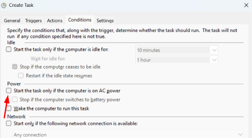

In Windows, launching a program like VSCode with elevated (administrator) rights without triggering the User Account Control (UAC) prompt directly is not supported natively for security reasons. UAC is designed to prevent unauthorized changes by alerting the user when a program tries to gain elevated privileges.
However, there are ways to configure certain applications or shortcuts to bypass the UAC prompt. Here's how to do it with some workarounds:
Task Scheduler Workaround
You can create a scheduled task to run the application with elevated privileges and then create a shortcut to trigger that task, bypassing the UAC prompt.
Steps
Open Task Scheduler:
- Press Win + R, type taskschd.msc, and press Enter.
Create a New Task:
- In the Task Scheduler, click on Action > Create Task.
Configure the Task:
- On the General tab:
- Give the task a name (e.g., "Run VSCode with Admin Rights").
- Check the box for Run with highest privileges.
- On the General tab:
Set Up the Trigger (Optional):
- You can skip the Triggers tab, as the task will be triggered manually through a shortcut.
Set Up the Conditions :
- Remove any conditions that might prevent the task from running, such as "Start the task only if the computer is on AC power."!

Set Up the Action:
- On the Actions tab, click New.
- In the Program/script field, browse to the path of the program you want to run (e.g., C:\Program Files\Microsoft VS Code\Code.exe for VSCode).
Create the Task:
- Click OK to create the task. You may need to enter your administrator password.
Create a Shortcut to the Task:
Right-click on your desktop and select New > Shortcut.
In the Type the location of the item field, enter:
schtasks /run /tn "Run VSCode with Admin Rights"(Replace "Run VSCode with Admin Rights" with the name of your task.)
Finish the Shortcut:
- Click Next, give your shortcut a name, and click Finish. Now, when you double-click this shortcut, VSCode will launch with admin rights without triggering the UAC prompt.
Note: The admin rights will only apply to the VSCode instance launched when no other instance of VSCode is running. If you already have a VSCode window open, the new instance will not have admin rights. To ensure that the new instance has admin rights, close all existing VSCode windows before launching it through the shortcut.
Open a terminal and run the following command to check if VSCode is running as admin:
([Security.Principal.WindowsPrincipal][Security.Principal.WindowsIdentity]::GetCurrent()).IsInRole([Security.Principal.WindowsBuiltInRole]::Administrator)
If the output is True, then VSCode is running with administrator privileges. If it returns False, then it is not running as admin.